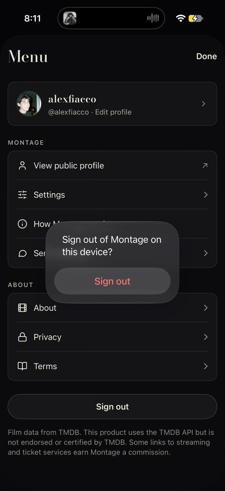

Brand menu v1: the ☰ Menu as a printed programme
You liked Settings as a programme (brand-pass-v1, fix 2). This does the same for the Menu that ☰ opens: AccountMenu in AccountScreens.swift and the web ProfileMenu "main" view. The rows and their order are unchanged. What goes: the grouped panels, the line icon in front of every row and the Sign out pill. What comes in: caps section labels, hairline rows on the ground, values on the right, your card at the top with Sign out beside it, and a colophon that keeps TMDB's logo and notice (rule 1186). "Now" is the owner's screenshot from Nov 3. The system sign-out alert caught in that shot has since become ConfirmDrawer.

The profile card, two bordered groups with a Lucide icon on every row, chevrons, a grey Sign out pill, then the TMDB notice in grey sans. It is tidy, but it is the same grouped-list template as Popcorn's Settings.

Version 1.4
Film data from TMDB. This product uses the TMDB API but is not endorsed or certified by TMDB. Streaming availability from JustWatch.
The same page as Settings. Rows are UI 15 on hairlines, values sit on the right in UI 13 muted, and Newsreader sub-lines appear only where a row needs explaining. Sign out sits on your card, as it does in Settings A. AcctGroup and AcctRow's icon go once, so Settings and the Menu change together.
Version 1.4
Film data from TMDB. This product uses the TMDB API but is not endorsed or certified by TMDB. Streaming availability from JustWatch.
A theatre programme's running order. The four things you come here for are numbered Bodoni 18 rows, each with a Newsreader italic line. About, Privacy, Terms and Help drop to a line of small links, the way a programme puts them in the back matter. It has more character, but it is a second list style that Settings does not share.
Decide
- A, the programme, exactly as Settings. The Menu and Settings are one stack (Settings is pushed from the Menu), so they should be one page style. It removes
AcctGrouppanels and row icons from both at once, and it keeps every row and its order. - B, the running order, if the Menu should feel more like a programme than a list. Its cost is a second list style, and the legal links become smaller targets (still 44 tall in the build).
- Sign out on your card, not a pill at the foot (in both A and B it is plain text, never
--danger, which stays for Delete). The confirm staysConfirmDrawer. - Keep TMDB's own logo above its notice (rule 1186), now in the colophon under the fan wordmark, set in Newsreader italic
--faint. - The values on the right in A ("Services, email, alerts", the support address) are optional. Drop them if you want the rows bare.